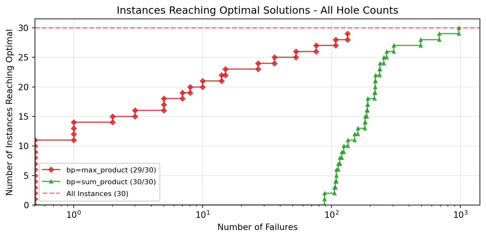
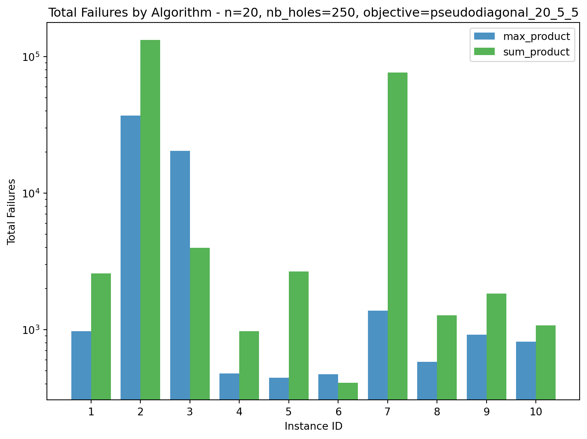
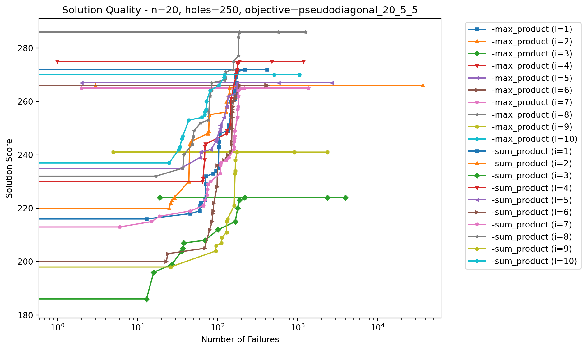
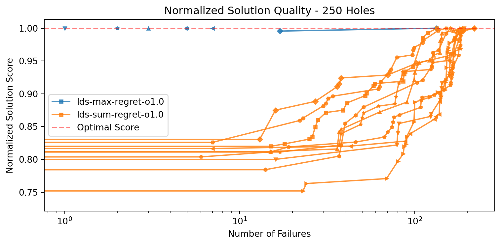
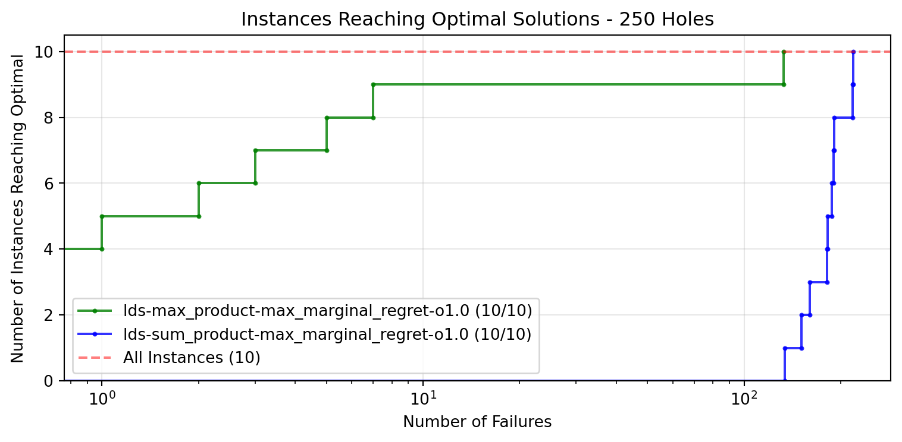
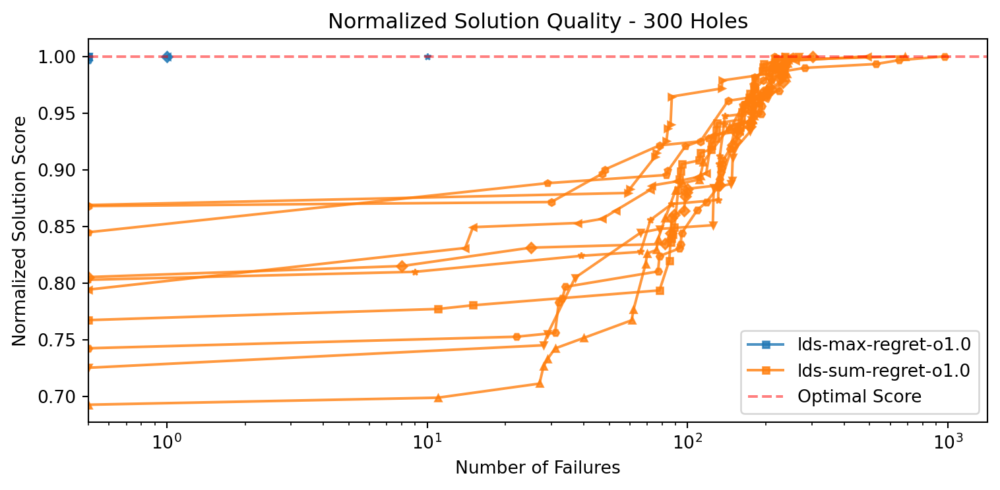
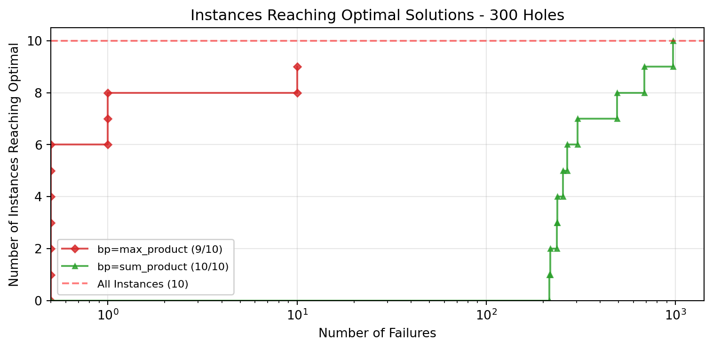

Code
from visualization import set_log_level
# Set log level - change to DEBUG for more detailed logs or WARNING to reduce output
set_log_level('INFO')This notebook compares the performance of constraint optimization algorithms for Latin Square problems.
from visualization import set_log_level
# Set log level - change to DEBUG for more detailed logs or WARNING to reduce output
set_log_level('INFO')First, let’s compare the performance of different algorithms across all instances (independent of hole count). This gives us a high-level view of how each algorithm performs on the entire dataset.
# Import libraries
import matplotlib.pyplot as plt
from data_loader import DataLoader
from experiment_config import (
ExperimentFilter, BPAlgorithm, Branching
)
from visualization import (
create_comparison_table,
plot_normalized_solution_quality,
plot_optimal_solutions_reached
)
# Set up the data loader - data will be loaded once on initialization
data_loader = DataLoader(logs_dir="logs")
# Define all instances
all_instances = list(range(1, 11))
# Create a filter for all instances with max-marginal-regret branching and LDS search
all_instances_filter = ExperimentFilter.from_dict({
'search_type': 'lds',
'algorithm.branching': 'max_marginal_regret',
'algorithm.oracle_weight': 1.0
})
# Load all data matching the filter
all_instances_df = data_loader.load_experiments_for_comparison(all_instances_filter)
# Plot the number of instances reaching optimal solutions
fig = plot_optimal_solutions_reached(
all_instances_df,
group_by=['bp'],
log_scale=True,
)
plt.title("Instances Reaching Optimal Solutions - All Hole Counts")
plt.show()2025-03-05 20:18:37,524 - data_loader - INFO - Loaded 30 optimal solutions from solutions
2025-03-05 20:18:37,534 - data_loader - INFO - Scanning 6980 files in logs
2025-03-05 20:18:46,093 - data_loader - INFO - Scanned 6980 files, loaded 6980 experiments
2025-03-05 20:18:46,102 - data_loader - INFO - Filtered 60 results out of 1840
2025-03-05 20:18:46,103 - data_loader - INFO - Loaded 60 experiments
Let’s analyze in more detail how the sum product and max product algorithms perform with max marginal regret branching and oracle weight 1.0, using LDS search, across different hole counts.
Same metrics on every graph, the slowest models are removed to change scale and make the graph more readable.
# 200 Holes
holes_200_filter = ExperimentFilter.from_dict({
'instance.nb_holes': 200,
'search_type': 'lds',
'algorithm.branching': 'max_marginal_regret',
'algorithm.oracle_weight': 1.0
})
holes_200_df = data_loader.load_experiments_for_comparison(holes_200_filter)
# Create comparison table with separate tables for each BP algorithm
print(create_comparison_table(holes_200_df, group_by=['bp']))
# Plot solution quality
fig = plot_normalized_solution_quality(holes_200_df, group_by=['bp'], log_scale=True)
plt.title("Normalized Solution Quality - 200 Holes")
plt.show()
# Plot optimal solutions reached for this specific hole count
fig = plot_optimal_solutions_reached(holes_200_df, group_by=['bp'], log_scale=True)
plt.title("Instances Reaching Optimal Solutions - 200 Holes")
plt.show()2025-03-05 20:18:48,195 - data_loader - INFO - Filtered 20 results out of 1840
2025-03-05 20:18:48,198 - data_loader - INFO - Loaded 20 experiments### bp: sum_product
| i | fs Sc | fs #f | ls Sc | ls #f | #fail | #sols | comp. |
|----:|--------:|--------:|--------:|--------:|--------:|--------:|:--------|
| 1 | 183 | 0 | 229 | 113 | 912 | 14 | Yes |
| 2 | 219 | 0 | 284 | 109 | 577 | 20 | Yes |
| 3 | 205 | 0 | 241 | 107 | 435 | 13 | Yes |
| 4 | 204 | 0 | 247 | 124 | 419 | 11 | Yes |
| 5 | 212 | 0 | 244 | 88 | 344 | 13 | Yes |
| 6 | 166 | 0 | 232 | 120 | 530 | 13 | Yes |
| 7 | 203 | 0 | 250 | 109 | 239 | 15 | Yes |
| 8 | 228 | 0 | 252 | 116 | 140 | 8 | Yes |
| 9 | 151 | 0 | 222 | 105 | 503 | 24 | Yes |
| 10 | 202 | 0 | 220 | 88 | 444 | 8 | Yes |
### bp: max_product
| i | fs Sc | fs #f | ls Sc | ls #f | #fail | #sols | comp. |
|----:|--------:|--------:|--------:|--------:|--------:|--------:|:--------|
| 1 | 222 | 16 | 229 | 27 | 218 | 2 | Yes |
| 2 | 284 | 14 | 284 | 14 | 144 | 1 | Yes |
| 3 | 237 | 48 | 241 | 108 | 237 | 2 | Yes |
| 4 | 241 | 32 | 247 | 53 | 245 | 2 | Yes |
| 5 | 244 | 76 | 244 | 76 | 238 | 1 | Yes |
| 6 | 232 | 8 | 232 | 8 | 585 | 1 | Yes |
| 7 | 250 | 15 | 250 | 15 | 78 | 1 | Yes |
| 8 | 252 | 0 | 252 | 0 | 51 | 1 | Yes |
| 9 | 222 | 36 | 222 | 36 | 497 | 1 | Yes |
| 10 | 220 | 5 | 220 | 5 | 431 | 1 | Yes |


# 250 Holes
holes_250_filter = ExperimentFilter.from_dict({
'instance.nb_holes': 250,
'search_type': 'lds',
'algorithm.branching': 'max_marginal_regret',
'algorithm.oracle_weight': 1.0
})
holes_250_df = data_loader.load_experiments_for_comparison(holes_250_filter)
# Create comparison table with separate tables for each BP algorithm
print(create_comparison_table(holes_250_df, group_by=['bp']))
# Plot solution quality
fig = plot_normalized_solution_quality(holes_250_df, group_by=['bp'], log_scale=True)
plt.title("Normalized Solution Quality - 250 Holes")
plt.show()
# Plot optimal solutions reached for this specific hole count
fig = plot_optimal_solutions_reached(holes_250_df, group_by=['bp'], log_scale=True)
plt.title("Instances Reaching Optimal Solutions - 250 Holes")
plt.show()2025-03-05 20:18:50,561 - data_loader - INFO - Filtered 20 results out of 1840
2025-03-05 20:18:50,565 - data_loader - INFO - Loaded 20 experiments### bp: max_product
| i | fs Sc | fs #f | ls Sc | ls #f | #fail | #sols | comp. |
|----:|--------:|--------:|--------:|--------:|--------:|--------:|:--------|
| 1 | 272 | 0 | 272 | 0 | 973 | 1 | Yes |
| 2 | 266 | 3 | 266 | 3 | 36865 | 1 | Yes |
| 3 | 223 | 17 | 224 | 133 | 20309 | 2 | Yes |
| 4 | 275 | 1 | 275 | 1 | 477 | 1 | Yes |
| 5 | 267 | 7 | 267 | 7 | 444 | 1 | Yes |
| 6 | 266 | 0 | 266 | 0 | 471 | 1 | Yes |
| 7 | 265 | 2 | 265 | 2 | 1374 | 1 | Yes |
| 8 | 286 | 0 | 286 | 0 | 580 | 1 | Yes |
| 9 | 241 | 5 | 241 | 5 | 917 | 1 | Yes |
| 10 | 270 | 0 | 270 | 0 | 815 | 1 | Yes |
### bp: sum_product
| i | fs Sc | fs #f | ls Sc | ls #f | #fail | #sols | comp. |
|----:|--------:|--------:|--------:|--------:|--------:|--------:|:--------|
| 1 | 221 | 0 | 272 | 134 | 2578 | 21 | Yes |
| 2 | 204 | 0 | 266 | 181 | 42971 | 18 | No |
| 3 | 184 | 0 | 224 | 219 | 3958 | 13 | Yes |
| 4 | 209 | 0 | 275 | 191 | 970 | 19 | Yes |
| 5 | 215 | 0 | 267 | 182 | 2670 | 18 | Yes |
| 6 | 199 | 0 | 266 | 190 | 407 | 25 | Yes |
| 7 | 202 | 0 | 265 | 218 | 20947 | 28 | No |
| 8 | 226 | 0 | 286 | 188 | 1270 | 21 | Yes |
| 9 | 177 | 0 | 241 | 160 | 1839 | 15 | Yes |
| 10 | 222 | 0 | 270 | 151 | 1076 | 21 | Yes |


# 300 Holes
holes_300_filter = ExperimentFilter.from_dict({
'instance.nb_holes': 300,
'search_type': 'lds',
'algorithm.branching': 'max_marginal_regret',
'algorithm.oracle_weight': 1.0
})
holes_300_df = data_loader.load_experiments_for_comparison(holes_300_filter)
# Create comparison table with separate tables for each BP algorithm
print(create_comparison_table(holes_300_df, group_by=['bp']))
# Plot solution quality
fig = plot_normalized_solution_quality(holes_300_df, group_by=['bp'], log_scale=True)
plt.title("Normalized Solution Quality - 300 Holes")
plt.show()
# Plot optimal solutions reached for this specific hole count
fig = plot_optimal_solutions_reached(holes_300_df, group_by=['bp'], log_scale=True)
plt.title("Instances Reaching Optimal Solutions - 300 Holes")
plt.show()2025-03-05 20:18:52,515 - data_loader - INFO - Filtered 20 results out of 1840
2025-03-05 20:18:52,516 - data_loader - INFO - Loaded 20 experiments### bp: sum_product
| i | fs Sc | fs #f | ls Sc | ls #f | #fail | #sols | comp. |
|----:|--------:|--------:|--------:|--------:|--------:|--------:|:--------|
| 1 | 234 | 0 | 305 | 236 | 97045 | 35 | Yes |
| 2 | 223 | 0 | 322 | 684 | 234252 | 29 | Yes |
| 3 | 248 | 0 | 308 | 303 | 20126 | 30 | Yes |
| 4 | 219 | 0 | 302 | 268 | 36918 | 28 | Yes |
| 5 | 216 | 0 | 272 | 491 | 11419 | 23 | Yes |
| 6 | 245 | 0 | 282 | 238 | 37374 | 16 | Yes |
| 7 | 234 | 0 | 277 | 216 | 99832 | 14 | No |
| 8 | 228 | 0 | 284 | 218 | 110039 | 20 | Yes |
| 9 | 243 | 0 | 280 | 254 | 28529 | 15 | Yes |
| 10 | 219 | 0 | 295 | 972 | 97105 | 34 | No |
### bp: max_product
| i | fs Sc | fs #f | ls Sc | ls #f | #fail | #sols | comp. |
|----:|--------:|--------:|--------:|--------:|--------:|--------:|:--------|
| 1 | 305 | 0 | 305 | 0 | 324879 | 1 | No |
| 2 | 322 | 0 | 322 | 0 | 231270 | 1 | Yes |
| 3 | 308 | 1 | 308 | 1 | 40133 | 1 | Yes |
| 4 | 302 | 0 | 302 | 0 | 317631 | 1 | No |
| 5 | 272 | 1 | 272 | 1 | 12526 | 1 | Yes |
| 6 | 282 | 0 | 282 | 0 | 62333 | 1 | Yes |
| 7 | 277 | 0 | 277 | 0 | 61335 | 1 | Yes |
| 8 | 284 | 10 | 284 | 10 | 26098 | 1 | Yes |
| 9 | 280 | 0 | 280 | 0 | 12543 | 1 | Yes |
| 10 | 294 | 0 | 294 | 0 | 88719 | 1 | No |

